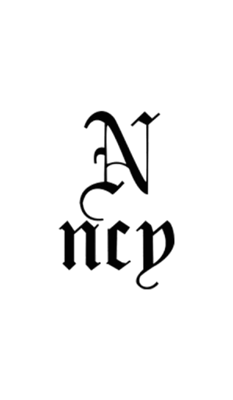
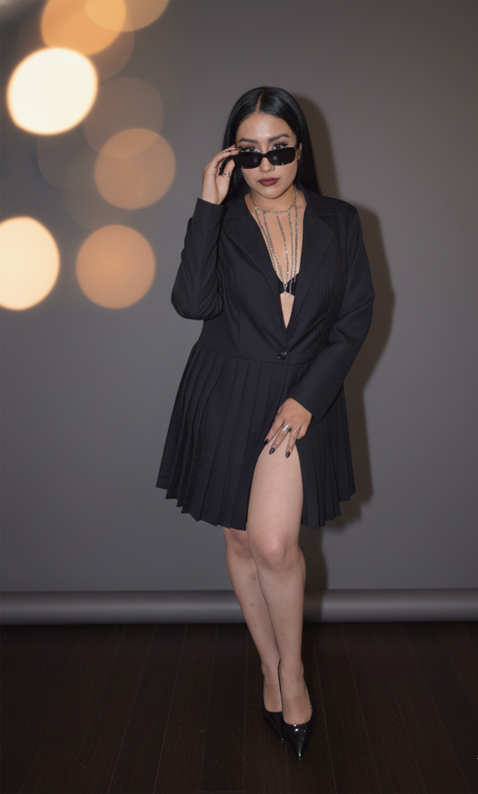
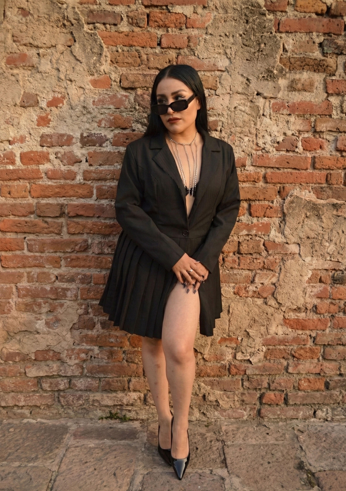
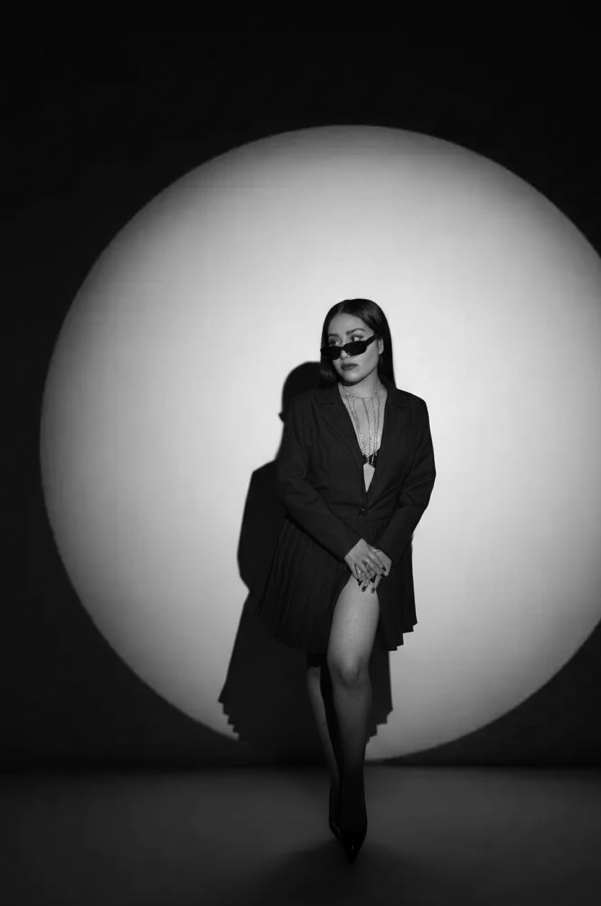

Diseño de una pieza con estructura inspirada en la sastrería clásica, con cuerpo tipo blazer corto y caída larga tableada. La silueta busca equilibrar fuerza y elegancia mediante líneas limpias, proporciones estructuradas y un movimiento fluido que acompaña al cuerpo sin perder presencia.


